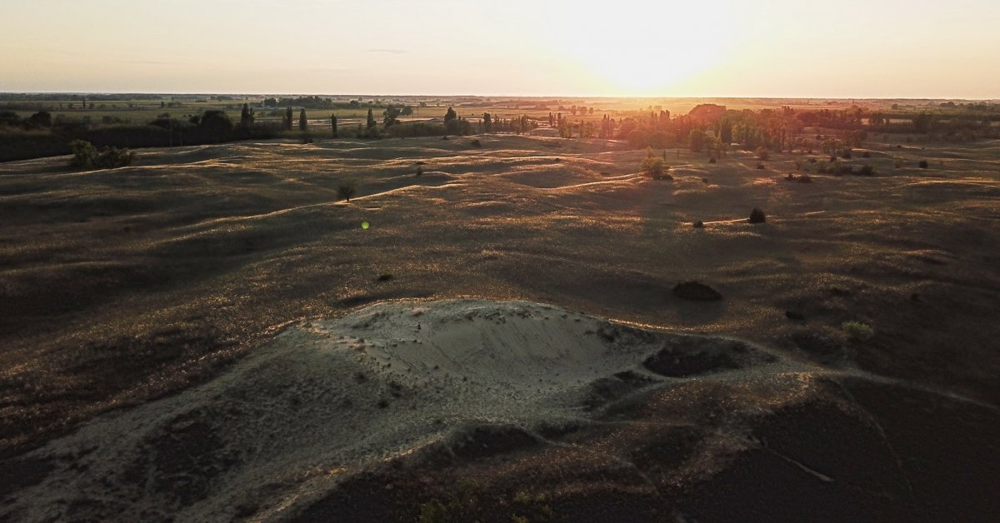

Fedezd fel a selymes homokbuckák és délibábok világát: A Kiskunsági Nemzeti Park!
Gondoltál már arra, milyen lehet egy olyan helyen kalandozni, ahol a szél napról napra láthatatlanul átformálja a tájat, a lábad alatt finom homokbuckák peregnek, a horizonton pedig a délibáb játéka mossa össze a földet az éggel? A Kiskunsági Nemzeti Park hazánk második nemzeti parkja, amelyet 1975-ben alapítottak. Ez a Duna–Tisza közén elterülő, több mint 50 ezer hektáros védett terület nem egyetlen összefüggő vadon, hanem kilenc különálló, mozaikos egységből álló csodaország. A park a buckavidékek, az ezer színben játszó szikes tavak és az ősi pásztorhagyományok birodalma, amely azonnali feltöltődést nyújt.
Központi Programok (Kecskemét)
A nemzeti park igazgatóságának és fő látogatóközpontjának Kecskemét ad otthont.
Állandó látnivalók
Egy gyönyörű, szecessziós jellegű épületben berendezett hatalmas, modern ökoközpont. Az állandó kiállítás zseniálisan, diorámákon és interaktív játékokon keresztül mutatja be Magyarország összes nemzeti parkját és a Kiskunság rejtett vadvilágát.
Kecskemét egyik legnépszerűbb nyári családi eseménye. Ezen az estén a látogatóközpont ünnepi fénybe öltözik, és éjszakai hüllőbemutatókkal, csillagászati távcsövezéssel, bagolylesekkel és kézműves udvarral várja az érdeklődőket a falak között.
Ezen a kiemelt országos rendezvényhéten a kecskeméti Természet Háza igazi információs és élményközponttá alakul, ahonnan exkluzív túrák indulnak a puszta minden szegletébe. A nemzeti park szakemberei ilyenkor ingyenes vagy jelképes összegű, szakvezetett orchideanéző túrákat hirdetnek meg a Páhi-rétekre, és olyan szigorúan védett, elzárt zónákba is bevezetik a látogatókat – például a fülöpházi vándorló homokbuckák mélyére –, ahová egyénileg egyébként szigorúan tilos lenne a belépés. A hét folyamán a látogatóközpont falai között ingyenes természetismereti játékok, családi vetélkedők és különleges esti bagolylesek várják a látogatókat, garantálva a digitális zajtól mentes, tartalmas kikapcsolódást.

Hangyaleső túra a Fülöpházi-buckavidéken Forrás: www.knp.hu
Bugac és a Homokhátság (A selymes buckák és a pásztorvilág)
A kiskunsági puszta legikonikusabb és leglátványosabb arca. Ez a terület a mozgó homokbuckák, a vágtázó ménesek és a monumentális hagyományőrző rendezvények otthona.
Állandó látnivalók
A park leglátogatottabb szíve, ahol évszázadok óta lüktet a tradicionális pásztorélet. A végtelen legelőkön és a nádfedeles hodályok között a monumentális magyar szürkemarhák és a csavart szarvú rackajuhok mellett dagonyázó mangalicák és békésen legelésző szamarak élnek. Az udvarban a régi magyar szárnyasfajták – mint a kendermagos, búbos és kopasznyakú tyúkok, magyar kacsák és pulykák – kapirgálnak, a nyájakat pedig az ősi magyar kutyafajták, a hűséges kuvaszok, komondorok és az örökmozgó fekete pulik őrzik. A puszta igazi büszkesége azonban a közel száz lovat számláló, elegáns kisbéri félvér ménes. A hagyományos viseletbe öltözött csikósok és gulyások mindennapjai mellett lélegzetelállító pusztai lovasbemutatókat, vágtákat és a híres Puszta-ötöst is láthatod itt élőben.
A puszta kapujában álló történelmi csárdában az igazi kiskunsági pásztorételeket (például a bugaci gulyáslevest) kóstolhatod meg. A közelében található, különleges építészeti formájú, jurtára emlékeztető Pásztormúzeumban pedig a kiskunsági pásztorok tárgyi kultúráját és mindennapjait ismerheted meg.
Hazánk egyik legkülönlegesebb földtani formációja. Itt láthatók Magyarország utolsó, valóban aktív, a szél által folyamatosan mozgatott és vándorló homokbuckái. A fehér homokú dűnék között sétálva úgy érezheted magad, mintha egy sivatagi oázisban járnál.
A bugaci puszta turisztikai belépőkapuja. Egy rendkívül modern, napelemes technológiával felszerelt öko-épület, ahol jegyet válthatsz a pusztai programokra, interaktív térképeken tervezheted meg a túrát, és helyi nemzeti parki termékeket vásárolhatsz.
A „Magyar Szahara” szélén álló, hangulatos oktató- és bemutatóhely. Kiváló kiindulópont a homokdűnék felfedezéséhez, ahol kisebb kiállítás mutatja be a homoki ökoszisztéma törékeny egyensúlyát.
Egy globálisan is egyedülálló, kulisszák mögötti tudományos bázis. Európa egyik legveszélyeztetettebb mérgeskígyójának, a rákosi viperának a megmentésére jött létre. Előzetes bejelentkezés és szervezett nemzeti parki túrák keretében látogatható, ahol testközelből láthatod a védelmi programot.
Egy igazi geológiai kuriózum a Kiskunság déli részén. Egy egykori bányagödörben kialakított szabadtéri múzeum, amely a puszta különleges kőzetét, a helyiek által csak „darázskőnek” vagy „varangykőnek” nevezett, mésziszapból keményedett réti mészkövet mutatja be.
Ha a legelőkön túl a homokvilág mélyére is benézel, a Kiskunság legkülönlegesebb vadon élő állataival találkozhatsz. A fák között a leggyakoribb emlős az üregi nyúl, a meleg homokbuckák ritka hüllője a fokozottan védett parlagi vipera, a gyepek fűszálain pedig egy igazi rejtélyes óriás, a fűrészlábú szöcske (Európa legnagyobb, akár 14 cm-es szöcskefaja) vadászik.
Európa legnagyobb hagyományőrző rendezvénye, amelynek a bugaci puszta ad otthont. Több százezer látogató előtt több ezer lovas íjász, hagyományőrző harcos, jurtatábor és fergeteges harci bemutatók keltenek életre a hun, magyar és avar múltat.
A Szikes Tavak és a Felső-Kiskunság (A vadvizek és madárparadicsomok)
Az ezer arcú szikes tavak világa, ahol a víz sós, fehéren csillog, és ahol a madárvonulások idején százezernyi szárnyas lepi el a horizontot.
Állandó látnivalók
A Kiskunság legnagyobb édesvízi mocsara és nádtengere. Az izsáki látogatóközpontból indulva felfedezheted a mocsár rejtett világát, felmászhatsz a Bikatorok-kilátóba, ahonnan fenséges panoráma nyílik a tájra, vagy bepillanthatsz a híres Kolon-tavi Madárvártára, amely a tudományos kutatás és madárgyűrűzés fellegvára.
Egy hatalmas, kontinentális jellegű szikes tó, amely a park egyik legfontosabb vizes élőhelye. A tó vize a magas nátrium-karbonát tartalom miatt fehéren csillog a napfényben. Igazi paradicsom ez a vadvízi madarak, a gulipánok, a küszvágó csérek és a ritka gázlómadarak számára.
Botanikai oázis Kiskőrös és Páhi között. Ez a terület a vizenyős, lápos rétek világa, ahol tavasszal és kora nyáron több ezer vadorchidea (pl. mocsári kosbor) virágzik elképesztő színpompát varázsolva a fű közé.
A Felső-Kiskunsági szikes puszták kapujában fekvő, hagyományos építészeti stílusú központ. Kiváló interaktív tárlattal mutatja be a sós legelők vadvilágát, a kurgánokat és a tradicionális kunsági pásztoréletet.
A park déli részén, Szatymaz mellett fekvő különleges helyszín. Egy teljesen épen maradt, több ezer éves kurgánt (ősi nomád temetkezési és figyelőhalmot) mutat be, amelynek tetejéről pazar kilátás nyílik a környező szikes pusztákra és gyepekre.
A nemzeti park hivatalos madarász programjai, ahol szakvezetők segítségével, távcsövekkel követheted a százezernyi vonuló madár (vadludak, darvak, gázlómadarak) mozgását, és részt vehetsz a látványos madárgyűrűzéseken is.
A Felső-Kiskunságban (Apaj és Kunszentmiklós környékén) rendezett tavaszi esemény, amely Európa legnagyobb testű, fokozottan védett pusztai madarát, a túzokot állítja reflektorfénybe. A látogatók a nemzeti park őreivel, hatalmas nagyítású távcsövekkel indulhatnak el a pusztába, hogy tisztes távolságból megcsodálhassák a hím túzokok elképesztő tavaszi násztáncát, a dürgést.
Ez a rendezvény a Kiskunság abszolút legnagyobb őszi madarász attrakciója, a hortobágyi daruvonulás déli párja! A Szeged melletti Fehér-tónál rendezett kétnapos fesztiválon szakvezetők kíséretében, hatalmas teleszkópokon keresztül nézheted meg az Észak-Európából érkező, a tavakon éjszakázó több tízezer daru és vadlúd monumentális esti behúzását. A madárles mellett ökopiac, természetismereti játékok és solymászbemutatók várják a látogatókat.
Tiszatáj és a Nemzeti Emlékhely (A folyóparti és történelmi Kiskunság)
Ahol a puszta találkozik a kanyargó Tisza folyóval és a magyarság legősibb történelmi emlékhelyeivel. A ligeterdők, az ártéri rétek és az ízes kunsági gasztronómia vidéke.
Állandó látnivalók
Bár külön intézményként működik, a természetvédelmi területe a nemzeti parkhoz tartozik. Itt látható a világhírű Feszty-körkép, emellett egy hatalmas skanzen, nomád park és lovasbemutatók várják a látogatókat, ahol a honfoglalás korába repülhetsz vissza.
A Tisza egyik leggyönyörűbb holtága, amely a festők és fotósok kedvence. A vízparti galériaerdők, a sűrű ártéri füzesek és a csendes stégek tökéletes helyszínt biztosítanak a kajakozáshoz, horgászathoz vagy egy romantikus naplementi sétához.
A tőserdei Holt-Tisza partján elterülő, mesebeli ártéri erdő. A hatalmas mocsári tölgyek és kőrisek árnyékában kanyargó pallósoros ösvényen járva úgy érezheted magad, mintha egy érintetlen dzsungelben sétálnál. A közelben ráadásul egy szuper gyógyfürdő és csónakkölcsönző is működik.
Egy bámulatos és teljesen hűen felépített történelmi skanzen a Tisza-parti dombon. A nemzeti park felügyelete alatt álló területen a honfoglalás kori magyarok félig földbe süllyesztett veremházait, nádfedeles karámjait, kemencéit és mindennapi eszközeit nézheted meg, miközben a lábad alatt terül el az alpári rét.
Túravezetés igénylése: Mivel a park mozaikos felépítésű és sok területe (például a szigorúan védett szikes tavak belső medrei) csak korlátozottan látogatható, a legszebb élményekért érdemes a kecskeméti Természet Háza Látogatóközpontban szakvezetést kérni.
A kiskunsági sivatag forró: A fülöpházi homokbuckáknál nyáron a homok hőmérséklete a +50 °C-ot is elérheti! Ide nyáron szigorúan tilos papucsban vagy mezítláb indulni. Zárt cipő, kalap, naptej és minimum 2 liter ivóvíz kötelező!
Szúnyogvédelem: A Kolon-tónál és a tőserdei ártéri erdőkben a nyári hónapokban a vizes élőhelyek miatt rengeteg a szúnyog és a bögöly. Hatékony szúnyogriasztó spray nélkül el se indulj a tanösvényekre!
A Kiskunsági Nemzeti Park nem csupán egy védett terület – ez a végtelen horizont szabadsága. A szél által formált homokdűnék hullámzása, a szikes tavakon megpihenő madárcsordák látványa és a pusztai naplemente vörös fénye pillanatok alatt kiszakít a mindennapi stresszből.
További információkért keresd fel a Kiskunsági Nemzeti Park hivatalos oldalát: www.knp.hu